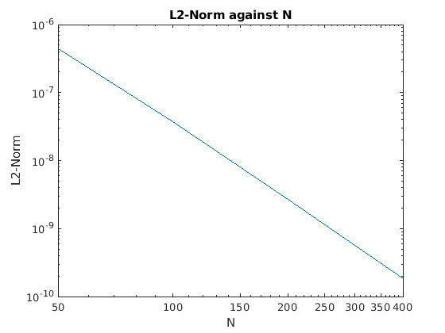
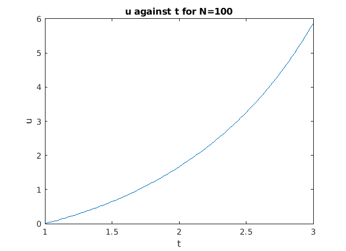

a=1;b=3;
uo = 0;
N = [50; 100; 200; 400];
f = @(t,u) 1 + (u/t) + (u/t)^2;
uexact = @(t) t.*tan(log(t));
L2 = zeros(4,1);
error = zeros(4,1);
for j = 1:4
[t,u] = abm4(f,a,b,uo,N(j));
err = u - uexact(t);
error(j) = err(N(j) +1);
L2(j) = L2Norm(uexact(t),u);
end
t1 = [3;3;3;3];
Table4 = table(t1,N,error, 'VariableNames',{'t','N','Error'})
fprintf('Since as N increases the decreases, hence the larger th N the better convergence of the \n the solution\n');
p = polyfit(log(N),log(L2(:)),1);
fprintf('\nThe order of convergence is %.4f\n',p(1))
fprintf('which is approximately -4, and it is the same as the slope of the lolog plot\n');
figure(1);
loglog(N,L2);
xlabel('N');
ylabel('L2-Norm');
title('L2-Norm against N');
figure(2);
[t,u] = abm4(f,a,b,uo,N(2));
plot(t,u);
xlabel('t');
ylabel('u');
title('u against t for N=100');
function L2 = L2Norm(uex,uap)
R = (uex - uap).^2;
L2 = sqrt(sum(R)/sum(uap.^2));
end
Table4 =
4×3 table
t N Error
_ ___ __________
3 50 3.4945e-06
3 100 2.9569e-07
3 200 2.147e-08
3 400 1.4463e-09
Since as N increases the decreases, hence the larger th N the better convergence of the
the solution
The order of convergence is -3.7458
which is approximately -4, and it is the same as the slope of the lolog plot
 